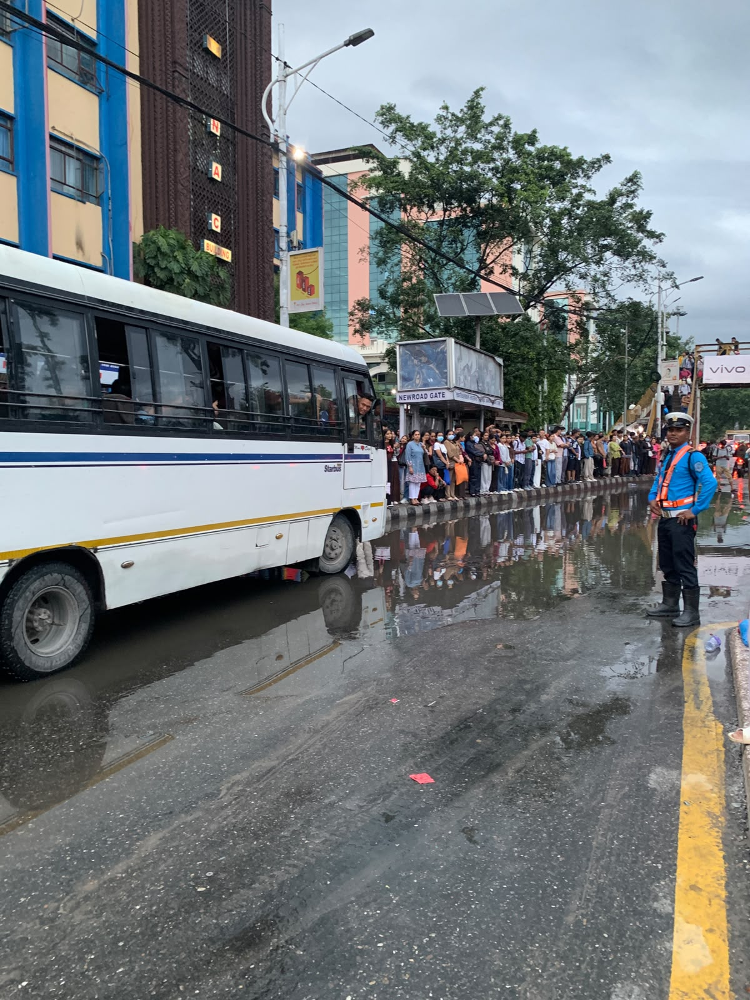
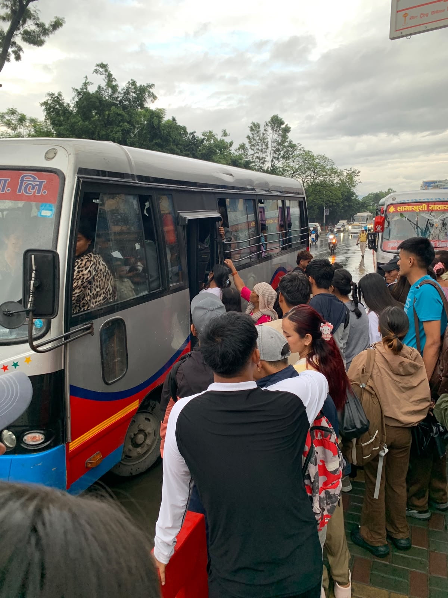

July 3, 2026
An Evening at Newroad Gate
For the past six months, my commute home has been quiet, dry, and easy. A friend has been kind enough to give me a lift from office, and somewhere along the way, that convenience quietly became my normal. I stopped thinking about bus stops, bus lay-bys, or the choreography of getting on and off a public vehicle in Kathmandu traffic. Today, that changed.
My friend couldn't make it, so this evening, I found myself standing at the NAC stop, waiting for a public bus like I used to, years ago. It had been raining that doesn't seem dramatic until you look down and realize the road has quietly turned into a shallow river in Kathmandu. The bus lay-by was flooded. Not ankle-deep-and-annoying flooded, but flooded enough that the reflections of the crowd and the streetlights shimmered on the water like the road had grown a second, upside-down city.

And the crowd. Rows and rows of people lined the kerb, packed shoulder to shoulder, waiting for buses that arrived already full, doors opening into a scrum of people trying to get off while twice as many tried to get on. I stood there, 28 weeks pregnant, watching bus after bus pull up, and I simply could not do what everyone around me was doing. I couldn't an elbow forward, plant a foot on a submerged step, and hoist myself up before the doors closed again.
I want to be honest: I felt useless standing there. Not because I couldn't manage a slightly complicated commute, but because doing so today would have meant physically competing for space and footing with people on a flooded, uneven kerb. And to be honest that wasn't a risk I could take, not right now. So I waited longer than I should have, watched buses fill and leave, and thought about how differently this evening would have gone as most evenings this year have gone: a car door, a seat, dry shoes, home.
Naturally, I tried the obvious alternative which is ride-hailing app. But the fares had shot up to nearly three times the usual rate, and even then, no vehicle could reach me. Whether it was the rain-induced traffic jams choking every route or simply demand outstripping supply, driver after driver was either unavailable or too far away to make it worth the wait. So that option, too, quietly closed itself off.
That's when it hit me quietly, but firmly. I have been privileged. Ridiculously, unthinkingly privileged. For six months, someone's goodwill and a private vehicle insulated me from a reality that thousands of people in this city navigate twice a day, rain or shine, pregnant or not, elderly or not, injured or not. Today was just one evening of it for me, and it was enough to leave me a little shaken.
But somewhere between frustration and gratitude, another question started nagging at me, one that had nothing to do with my own circumstances: why does something as basic as a bus stop have to be this hard? Why is it acceptable for a bus lay-by to be flooded every monsoon, year after year, as if rain were an unprecedented event and not, well, the defining feature of the season? Why is there no orderly queue, no covered waiting area wide enough for the actual volume of commuters, no thought given to how people especially those who are old or kid, disabled, pregnant, sick, or simply carrying too much - are supposed to safely board a bus in these conditions?
As someone who spends her working days around procurement, technical evaluation, and infrastructure on much larger projects, standing at that flooded kerb felt almost ironic. We plan highways and bridges with painstaking technical rigor, yet a city bus stop which is the single most-used piece of transport infrastructure for ordinary people, is left to chance, puddles, and sheer human tolerance for discomfort.

Two and a half hours later, I finally managed to squeeze onto a microbus and here the word "managed" is generous. It meant hustling through a crowd that had long since given up on order, with people shouting "wait, wait!" at each other and at the conductor, everyone trying to claim a foothold before the doors shut again. The microbus itself would only take me about 30 minutes walk toward home, because I couldnot fight to take the bus routing towards my home. And even this small victory was really just the first leg of a longer journey still ahead of me. I got home eventually, my shoes soaked, two and a half hours later than I should have been, and a feeling that wouldn't quite settle.
How many problems can you spot in this one frame — for commuters, for pedestrians, for accessibility, for basic city planning?
I'd love to hear what you notice.